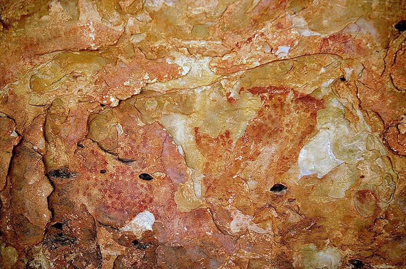
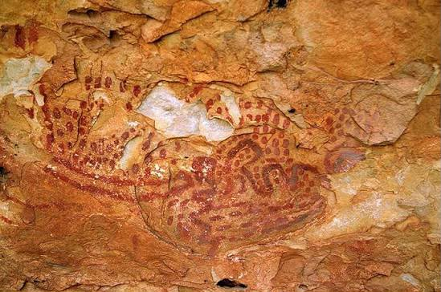

Histoire & Patrimoine
Le patrimoine archéologique de Toulkine

Amzri : un patrimoine archéologique remarquable
À proximité de Toulkine se trouve le site d'Amzri, associé dans la littérature archéologique à la dénomination « Grotte de Toulkine » ou « Abri d'Amzri ».
Ce site constitue un élément important du patrimoine préhistorique de la région. Les travaux de recherche associés à l'abbé A. Glory, notamment ceux menés en 1951, ont contribué à faire connaître ce site dans les études archéologiques.
Les vestiges du site
Outils en silex
Des outils en pierre taillée, notamment en silex, témoignant de l'occupation préhistorique du site.
Fragments de poterie
Des fragments de poterie issus des couches archéologiques du site d'Amzri.
Restes osseux
Des restes osseux d'origine animale retrouvés dans les fouilles archéologiques.
Matières colorantes
Des outils de broyage, de meulage et des matières colorantes associées aux peintures rupestres.

Le Toulkinien : une appellation liée au territoire
Le nom de Toulkine est également associé à une appellation archéologique particulière : le « Toulkinien ».
La littérature spécialisée utilise notamment l'expression « trièdres toulkiniens » pour désigner des outils lithiques à trois faces associés au site.
Cette appellation témoigne de la place du territoire dans les recherches consacrées aux industries préhistoriques.
Les peintures rupestres
Certaines études consacrées à Toulkine et Amzri décrivent des peintures rupestres rouges associées à l'ocre. Les représentations mentionnées comprennent des lignes, des points, des formes géométriques et certaines figures animales possibles.




La datation précise des peintures rupestres ne doit pas être déduite de celle des outils retrouvés dans les couches archéologiques. Ces éléments constituent un patrimoine culturel et archéologique à préserver et à faire connaître, dans le respect du site et des connaissances scientifiques disponibles.
Un patrimoine à préserver
La valorisation du patrimoine d'Amzri doit s'inscrire dans une démarche responsable, qui associe la préservation des sites, la sensibilisation des visiteurs et la participation des acteurs locaux.
Préparez votre visite